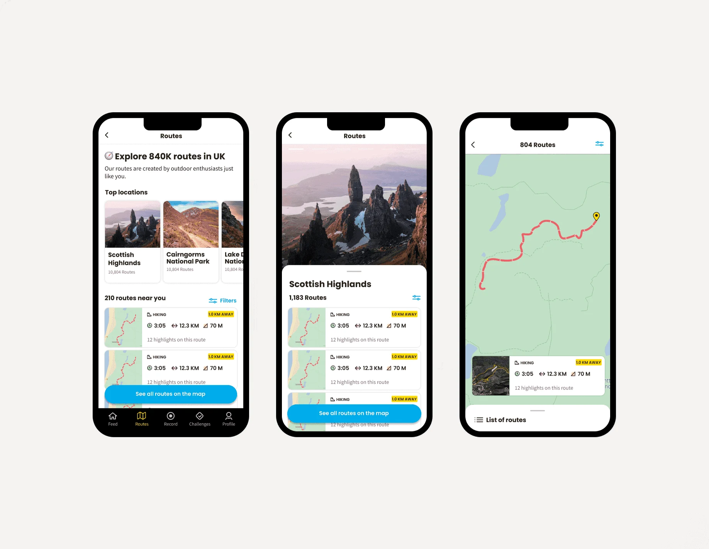
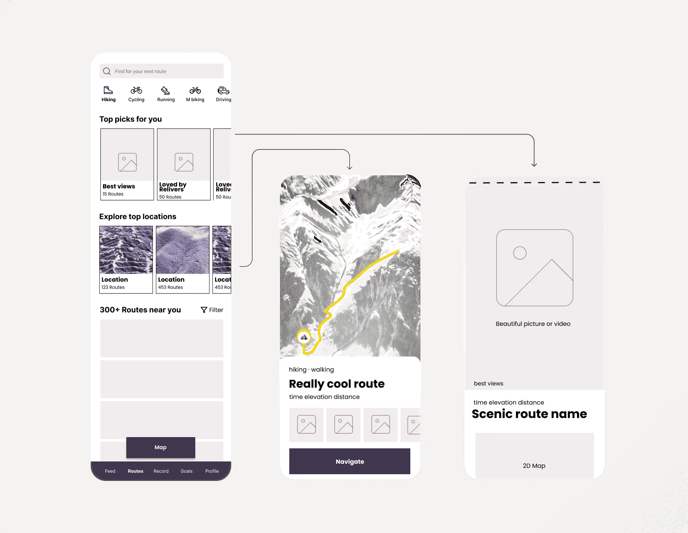
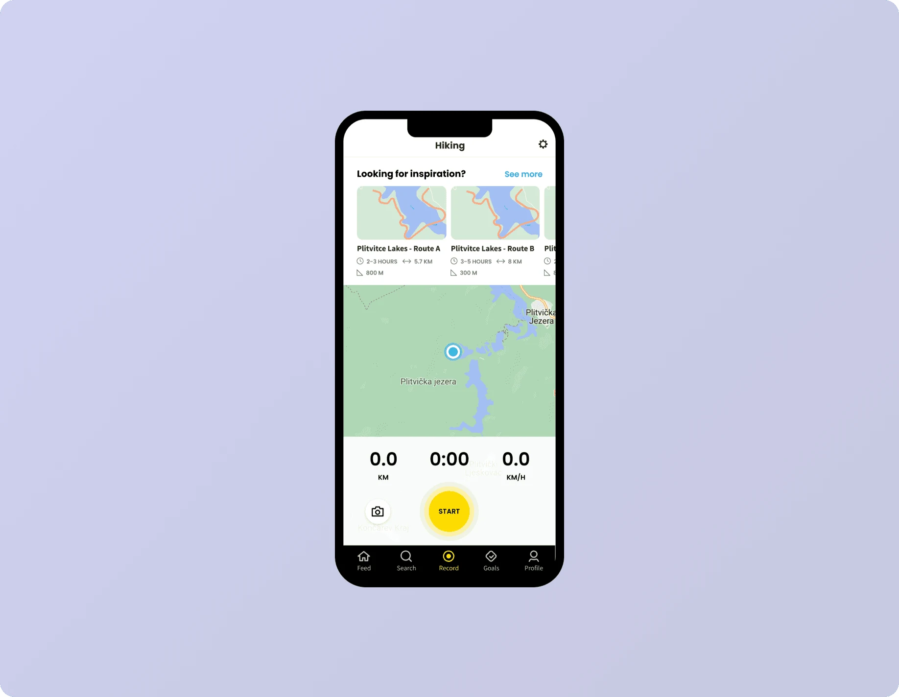
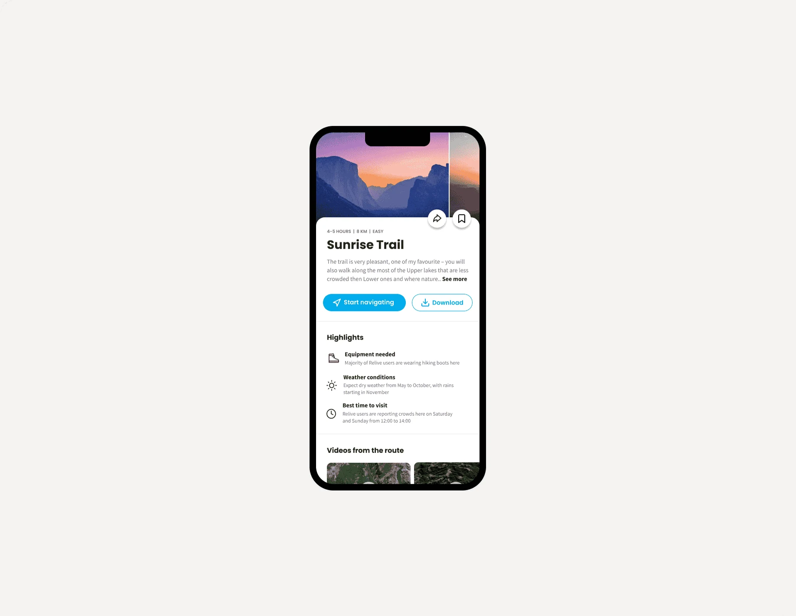

July 2022
Archive
Helping people find their next adventure
We started to see signs that Relive users wanted routes. I was asked to design an experience to help them find and follow routes near them.

- Discipline
- Product design
- Company
- Relive
- Year
- 2022
- Timeline
- 3 weeks
01
Problem
Routes fit Relive’s strategy. Relive wanted to be more than a video of your outdoor activity: it wanted to support people at every step, from choosing where to go to the video at the end.
Relive already had a lot of GPS data from recorded activities, so we generated and matched about 10K routes in less than a month. What we didn’t know was the smallest product that would tell us whether to invest more. None of us had built a routes or navigation app before, but we were curious, and we made it work.
02
What I did
From earlier interviews, I already knew which apps our users used to find and follow routes. Researching them showed me what was a must-have and what was a nice-to-have. I also watched dozens of YouTube videos of hikers explaining their routines, to catch parts of the experience my research might have missed.
Then we agreed on a minimum lovable product. A new feature has to fit the ones already there, so I mapped the objects and wrote down every attribute each one could have. After a day of workshops we agreed on the shape of Routes, and I designed a vision of what a 10x experience could look like.

03
Method
I scoped the vision with the team to see what was feasible. Together we decided to put the main entry to Routes on the Record screen, since that made sense conceptually.

04
Result
A month after launch, we saw no impact. People seemed blind to our route suggestions. I watched dozens of session recordings and sent surveys and interview invitations to understand why. Experiments that surfaced Routes even more didn’t help either.
We concluded that we didn’t offer enough routes. Relive has millions of users worldwide, and 10K generated trails don’t help most of them, so we couldn’t see results at scale. The routes on offer were most likely too far away, or too familiar.
So we gave Routes another go: quantity over quality this time, and one English-speaking market instead of everyone. That meant running the whole process again.

05
Moving on
After another wireframe vision for Routes, scoped down with the team, I moved on to the final UI. Some technical limits came up along the way: for example, we couldn’t generate meaningful route names, so we went without them.
Honestly, I was worried about that, since everything online has a name, a title or a tag. User testing proved me wrong: none of the 15 people we spoke to noticed anything odd.
06
What I learned
This was still a work in progress when I wrote it up, so I can’t say how it turned out. It is another reminder that you can’t just add a feature and hope people start using it, especially when they came to your product for a different job.